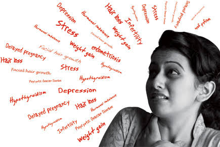

Depression is a common mental health problem that causes people to experience low mood, loss of interest or pleasure, feelings of guilt or low self-worth, disturbed sleep or appetite, low energy, and poor concentration.

MOOD
apathy,guilt,hopelessness,mood swings,loos of intrert,lossof pleasure,angar,aggressionness
SLEEP
excess sleepiness,insomania,restless sleep,weight loss & weight gain,excessive hunger,loss of appetite,low blood pressure
WORST CONDITION
asthama
cancer
obesity
diabetes
cardiovascular Disease
SEXUAL
Reduce sexual desire
BEHAVIORAL
social isolation,withdrawing from social enagements